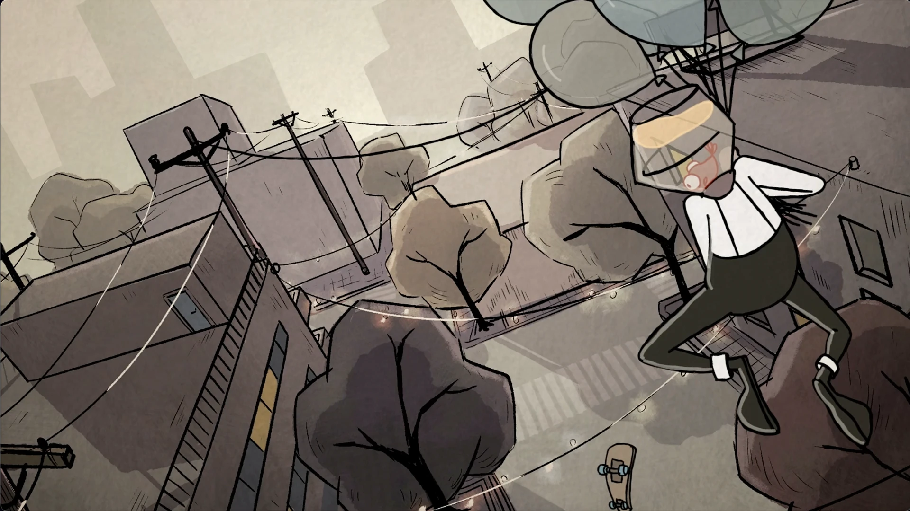

FishBob
This is an animated 2D short film I have directed for my graduation thesis at Savannah College of Arts and Design. The concept was inspired by my trip to San Francisco. As a director and animation supervisor, the story was created by multiple talented artists from SCAD.
